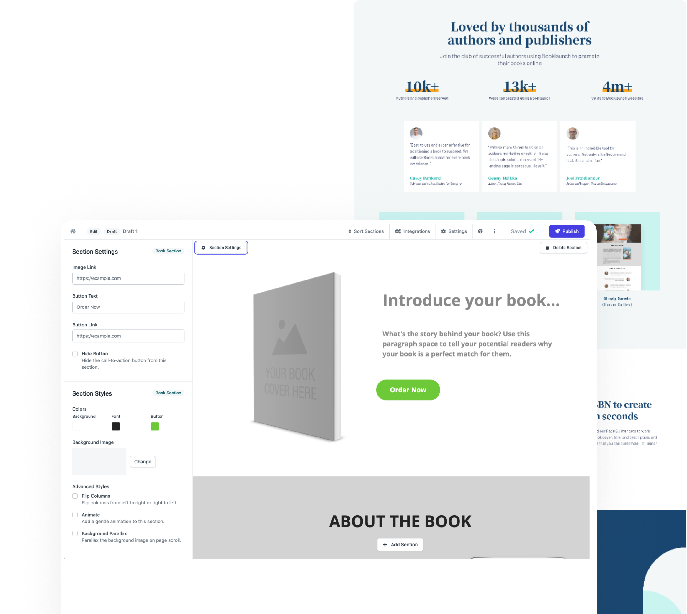
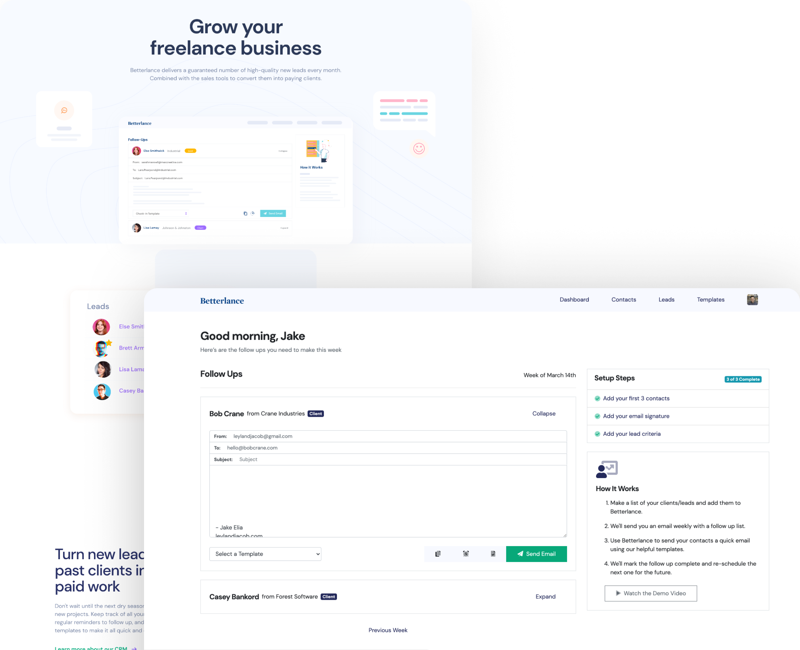

Booklaunch and Betterlance started as solutions to real problems I witnessed firsthand. Eight years later, Invoice2go acquired both — not for their technology, but because they had paying customers, proven demand, and design that made complicated things feel simple.
There may be no better way to develop deep, holistic empathy than when you build something from nothing and have to live off the returns.
At that point, empathy is how you survive. You wear every hat — because other than your co-founder, there's no one else. You sit with customers not to fill a research quota but because their answers determine what you build next week. You lose sleep over how to get the first one, then the next ten, then the next hundred.
You make sure the value is felt the moment someone lands on the page, because you wrote that page too. Cuts hurt — features, scope, sometimes whole directions. You're the one who has to make that call because the business requires it.
Being a co-founder of a small product gives you a different relationship with the work entirely. And I got to do it twice.
Authors could write. They just couldn't market — and every tool available made that harder, not easier.
My first foray as a co-founding designer was the publishing platform, Snippet — a rich multimedia mobile experience for readers and a simple publishing tool for writers. Building it illuminated a stark reality: most aspiring authors could craft stories and entire series of books, but their lack of marketing and technical skills were huge barriers to success.
I started meeting with groups of authors — published, self-published, debut writers — to understand how they marketed their work online. The same problem kept coming up: they needed a professional web presence for their book, but every solution available required either hiring a costly designer or developer, wrestling with a generic website builder not built for their use case, or giving up and posting a link to Amazon.
These were intelligent, creative people being blocked by a technical barrier that had nothing to do with whether their book was good.
"A general website tool with an author template bolted on wasn't the answer. It needed to be purpose-built."
Booklaunch gave authors a way to build professional book sales pages without a designer or a developer. The breakthrough was the ISBN lookup: enter one number and the page builds itself — cover image pulled automatically, complementary color palette generated from it, text and links populated. With customizable templates, built-in hosting, and seamless integrations, it was the simplest solution for authors to promote their work, engage with readers, and drive book sales.

I designed everything: the brand, the marketing site, the product UI, the onboarding flow, the email templates. I also built the growth strategy — partnering with author influencers, hosting webinars inside author communities, going where the users already gathered and earning their trust before asking for anything.
Every CRM I tried was built for a sales team at a company. I needed something that understood how a freelancer actually works.
As a freelance designer, my biggest challenge wasn't doing the work — it was staying top of mind with my customer base to keep a steady stream of project requests coming in. Following up with past clients. Remembering to check in with someone I'd talked to six months ago. Staying organized enough to not let opportunities fall through the cracks.
Every existing CRM was dense, complicated, full of features designed for someone tracking a pipeline of hundreds. I needed something simple. So I built it — then talked to a host of other freelance creatives to understand whether my problem was their problem too.
It was.
Betterlance was the first CRM built specifically for freelancers. Lightweight contact management, personalized follow-up sequences, automated reminders — without the complexity of enterprise tools. The product was designed around one insight: managing relationships with your current clientele leads to significantly more work than the energy spent on marketing to brand new prospects.

From idea to MVP in 60 days. I designed the brand, product, and marketing — and handled initial customer acquisition personally, reaching into freelance communities where I already had credibility.
I designed everything for both products. That's not an exaggeration — it's what the job actually was.
Both acquired by Invoice2go in 2021 — and then Invoice2go was acquired by Bill.com within months.
Invoice2go needed a more robust package for small micro-businesses to grow successfully. The combination of near-instant marketing website creation (Booklaunch) and customer relationship management with automated outreach (Betterlance) was a perfect fit. The addition of both products contributed to Invoice2go's acquisition by Bill.com shortly after.
Being a designer who has also been a founder changes how you see every design problem. You stop asking "what do users want" in the abstract and start asking "what will make someone pay, stay, and tell a friend." That question makes the design better every time.
The products were acquired not for their technology but because they had paying customers, proven demand, and design that made complicated things feel simple. That's the standard I've carried into every role since.